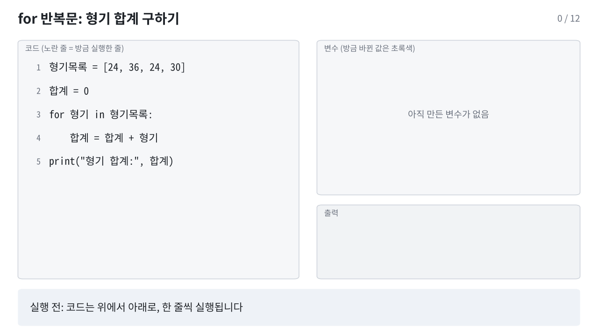
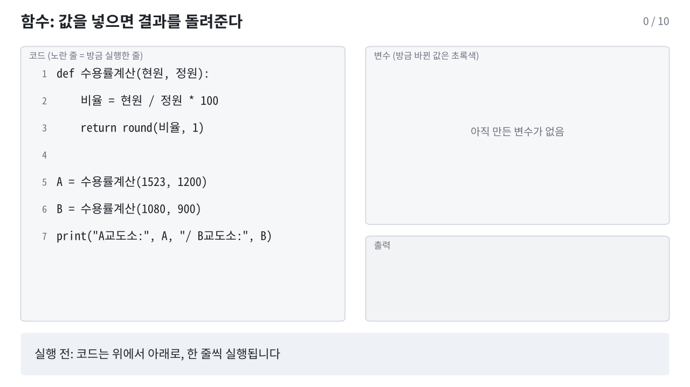

print("안녕하세요")
print(1 + 2)안녕하세요
3이 장에서는 데이터 분석에 필요한 파이썬 문법을 익힙니다. 값의 종류(자료형), 계산(연산자), 여러 값을 묶는 방법(리스트, 딕셔너리), 같은 일을 반복하기(반복문), 자주 하는 계산을 묶어 두기(함수) 순서로 진행합니다.
Colab 노트북은 코드 칸(셀)과 글 칸으로 이루어져 있습니다. 코드 칸을 누르고 Shift + Enter를 누르면 그 칸이 실행되고 결과가 바로 아래에 나옵니다.
Colab은 칸을 화면의 위아래 순서가 아니라 실행한 순서대로 기억합니다. 칸 왼쪽의 [3] 같은 숫자가 실행 순서입니다.
NameError: name '...' is not defined가 나면, 그 변수를 만드는 위쪽 칸을 아직 실행하지 않은 경우가 대부분입니다.런타임 메뉴의 세션 다시 시작 및 모두 실행(영문 화면: Restart session and run all)을 씁니다.모두 실행은 오류가 난 칸에서 멈춥니다. 이 노트북에는 오류 메시지를 보여 주려고 일부러 오류를 내는 칸이 하나 있으니(1.5절), 거기서 멈추면 다음 칸부터 Shift + Enter로 이어서 실행합니다.Colab은 한동안 사용하지 않으면 연결이 끊깁니다. 다시 연결하면 만들어 둔 변수와 올린 파일이 모두 사라지므로 위쪽 칸부터 다시 실행해야 합니다.
| 동작 | Windows | Mac |
|---|---|---|
| 칸 실행 후 다음 칸으로 | Shift + Enter | Shift + Enter |
| 칸 실행 (그 칸에 머묾) | Ctrl + Enter | Cmd + Enter |
| 아래에 코드 칸 추가 | Ctrl + M 다음 B | Cmd + M 다음 B |
| 선택한 줄 주석 처리/해제 | Ctrl + / | Cmd + / |
# 뒤에 쓴 내용은 주석입니다. 실행되지 않고, 코드에 메모를 남길 때 씁니다.
칸의 마지막 줄이 값이면 print() 없이도 그 값이 출력됩니다.
“ ”, ‘ ’처럼 둥근 모양으로, 괄호가 （ ） 같은 전각 문자로 바뀌어 있을 수 있습니다. 파이썬은 곧은 따옴표(" ", ' ')와 반각 괄호만 알아봅니다. 실행하면 SyntaxError: invalid character '“' (U+201C)처럼 어떤 문자가 문제인지 알려줍니다. 그 문자를 지우고 키보드로 다시 입력합니다.print가 ㅔ걒처럼 입력되어 NameError가 납니다. 코드를 칠 때는 한/영 상태를 먼저 확인합니다.변수는 값에 이름을 붙여 저장해 두는 것입니다.
=는 “같다”는 뜻이 아니라 오른쪽 값을 왼쪽 이름에 저장한다는 뜻입니다.형기_개월).| 쓸 수 없는 이름 | 이유 | 고친 예 |
|---|---|---|
1번수용자 |
숫자로 시작 | 수용자1 |
수용 번호 |
띄어쓰기 | 수용_번호 |
형기-개월 |
-를 빼기 기호로 읽음 |
형기_개월 |
if, for, class, True |
파이썬이 문법에 쓰는 단어(예약어) | 조건, 구분 |
규칙을 어기면 실행 전에 SyntaxError가 납니다. 예약어 목록은 import keyword 다음 print(keyword.kwlist)로 볼 수 있습니다.
Name과 name은 서로 다른 변수입니다. Name = 1로 만들고 print(name)을 실행하면 NameError: name 'name' is not defined. Did you mean: 'Name'?이 납니다. 오류 메시지의 Did you mean에 비슷한 이름이 나오면 오타를 의심합니다.
값에는 종류가 있습니다. 데이터를 다룰 때 가장 많이 쓰는 네 가지는 다음과 같습니다.
| 자료형 | 이름 | 예 | 교정 데이터에서 |
|---|---|---|---|
int |
정수 | 24, 1001 |
나이, 형기(개월), 수용번호 |
float |
실수 | 126.9 |
수용률 |
str |
문자열 | "절도" |
죄명, 시설 이름 |
bool |
참거짓 | True, False |
직업훈련 참여 여부 |
type()으로 값의 종류를 확인할 수 있습니다.
<class 'int'>
<class 'float'>
<class 'str'>
<class 'bool'>문자열은 따옴표로 감쌉니다. 24는 숫자이고 "24"는 글자입니다. 둘은 다른 값입니다.
true, false로 쓰면 NameError: name 'true' is not defined. Did you mean: 'True'?가 납니다.
10 / 2의 결과는 5가 아니라 5.0입니다. 정수 결과가 필요하면 몫 연산자 //를 씁니다.
| 연산자 | 뜻 | 예 | 결과 |
|---|---|---|---|
+ |
더하기 | 30 + 6 |
36 |
- |
빼기 | 30 - 6 |
24 |
* |
곱하기 | 30 * 2 |
60 |
/ |
나누기 | 30 / 12 |
2.5 |
// |
몫 | 30 // 12 |
2 |
% |
나머지 | 30 % 12 |
6 |
** |
거듭제곱 | 2 ** 3 |
8 |
엑셀에서는 2^3이 8이지만 파이썬에서 ^는 다른 연산(비트 연산)이라 2 ^ 3의 결과는 1입니다. 오류 없이 틀린 값이 나오므로 더 조심해야 합니다.
| 엑셀 | 파이썬 |
|---|---|
=A1+B1 (등호로 시작) |
a + b (등호 없이) |
2^3 |
2 ** 3 |
A1<>B1 |
a != b |
AND(조건1, 조건2) |
조건1 and 조건2 |
ROUND(x, 1) |
round(x, 1) (반올림 규칙이 다름, 아래 참고) |
몫(//)과 나머지(%)를 쓰면 형기 30개월을 “2년 6개월”로 바꿀 수 있습니다.
2025년 전국 교정시설의 수용 정원은 50,614명, 1일 평균 수용인원은 63,680명이었습니다(2026 교정통계연보). 수용률을 계산해 봅니다.
round(2.5)는 3이 아니라 2, round(3.5)는 4입니다. 정확히 가운데(.5)일 때 짝수 쪽으로 맞추기 때문입니다. 또 실수 오차 때문에 round(0.125, 2)는 0.12가 됩니다. 보고서 숫자가 엑셀과 끝자리 하나가 다르면 이 규칙을 먼저 의심합니다.
곱셈과 나눗셈이 덧셈과 뺄셈보다 먼저 계산됩니다. 먼저 계산할 부분은 괄호로 묶습니다.
비교 연산의 결과는 True 또는 False입니다.
| 연산자 | 뜻 |
|---|---|
== |
같다 |
!= |
다르다 |
>, >= |
크다, 크거나 같다 |
<, <= |
작다, 작거나 같다 |
True
False
False
True=는 저장, ==는 같은지 비교입니다. 처음에 가장 많이 헷갈리는 부분입니다.
20 <= 나이 < 30처럼 쓰면 “20 이상 30 미만”을 한 번에 확인합니다. 나이 >= 20 and 나이 < 30과 같습니다.
| 연산자 | 뜻 |
|---|---|
and |
둘 다 참이면 참 |
or |
하나라도 참이면 참 |
not |
참과 거짓을 뒤집음 |
문자열끼리 +로 이어 붙이고, *로 반복할 수 있습니다.
문자열 앞에 f를 붙이면 { } 안에 변수 값을 넣을 수 있습니다.
"나이: " + 24는 TypeError: can only concatenate str (not "int") to str이 납니다. "나이: " + str(24)처럼 바꾸거나 f-문자열을 씁니다.
print("안녕)처럼 닫는 따옴표가 빠지면 SyntaxError: unterminated string literal이 납니다. f-문자열 안에서 딕셔너리 값을 꺼낼 때는 바깥과 다른 따옴표를 씁니다: f"{수용자['나이']}세".
자료형을 바꿔야 할 때가 있습니다. 엑셀이나 CSV에서 읽은 숫자가 글자로 들어와 있는 경우가 대표적입니다.
--------------------------------------------------------------------------- TypeError Traceback (most recent call last) Cell In[15], line 2 1 나이_문자 = "24" ----> 2 나이_문자 + 1 TypeError: can only concatenate str (not "int") to str
위 칸은 일부러 오류가 나게 만든 코드입니다(모두 실행을 쓰면 여기서 멈추므로 다음 칸부터 이어서 실행합니다). 오류 메시지의 마지막 줄을 읽으면 원인을 알 수 있습니다. 여기서는 글자(str)와 숫자(int)를 더할 수 없다는 뜻입니다. int()로 숫자로 바꾸면 계산됩니다.
| 코드 | 결과 | 해결 |
|---|---|---|
int("24.5") |
ValueError |
소수점이 있는 글자는 int(float("24.5")) |
float("1,234") |
ValueError |
쉼표를 지우고 변환: float("1,234".replace(",", "")) |
int(24.9) |
24 |
반올림이 아니라 소수점 아래를 버림. 반올림은 round(24.9) |
여러 값을 순서대로 묶을 때는 리스트를 씁니다. 대괄호 [ ] 안에 쉼표로 구분해 넣습니다.
위치(인덱스)로 값을 꺼냅니다. 위치는 0부터 셉니다.
24
31
52
[31, 45][0]입니다. 값이 5개인 리스트의 마지막은 [4] 또는 [-1]이고, [5]를 꺼내면 IndexError: list index out of range가 납니다.나이목록[1:3]은 1번, 2번 위치만 꺼냅니다. 끝 번호(3)는 들어가지 않습니다.리스트에 든 값의 개수는 len()으로 셉니다.
append()로 맨 뒤에 값을 추가합니다.
딕셔너리는 “이름표: 값” 쌍을 묶습니다. 수용자 한 명의 정보를 담기에 알맞습니다.
절도
24값을 바꾸거나 새 항목을 추가할 수 있습니다.
{'수용번호': 1001, '시설': 'A교도소', '나이': 24, '죄명': '절도', '징벌횟수': 3, '직업훈련': 'N'}이름표는 글자 하나까지 정확해야 합니다. 수용자["나이 "]처럼 띄어쓰기가 하나만 더 있어도 KeyError: '나이 '가 납니다. 없을 수도 있는 이름표는 수용자.get("상담횟수", "정보 없음")처럼 get()으로 꺼내면 오류 대신 기본값을 돌려줍니다.
같은 이름표로 다시 저장하면 앞의 값은 지워지고 나중 값만 남습니다.
표의 한 행은 딕셔너리 하나와 같습니다. 2장에서 다룰 pandas의 표(DataFrame)도 열 이름을 이름표처럼 써서 값을 꺼냅니다.
리스트의 값을 하나씩 꺼내 같은 작업을 반복할 때 for를 씁니다. 형기를 하나씩 더해 합계를 구해 봅니다.
for 줄 끝에 콜론(:)을 붙입니다.for 안인지 구분합니다.아래 움직이는 그림은 위 코드가 한 줄씩 실행되는 과정입니다. 노란 줄이 방금 실행한 줄이고, 오른쪽에 그 결과로 바뀐 변수 값이 초록색으로 표시됩니다.

반복할 때마다 형기와 합계가 바뀌는 과정을 표로 정리하면 다음과 같습니다.
| 반복 | 꺼낸 값 형기 |
실행 전 합계 |
실행 후 합계 |
|---|---|---|---|
| 1회째 | 24 | 0 | 24 |
| 2회째 | 36 | 24 | 60 |
| 3회째 | 24 | 60 | 84 |
| 4회째 | 30 | 84 | 114 |
for 아래 들여 쓴 줄만 반복됩니다. print("형기 합계:", 합계)를 들여 쓰면 반복할 때마다 출력되고, 들여 쓰지 않으면 반복이 끝난 뒤 한 번만 출력됩니다.
| 실수 | 오류 메시지 |
|---|---|
콜론 빠뜨림 (for 형기 in 형기목록) |
SyntaxError: expected ':' |
| 반복할 줄을 들여 쓰지 않음 | IndentationError: expected an indented block after 'for' statement on line 3 (끝의 숫자는 for가 있는 줄 번호) |
| 같은 묶음 안에서 들여쓰기 칸 수가 다름 | IndentationError: unindent does not match any outer indentation level |
Colab 편집기는 콜론 다음 줄을 자동으로 들여 씁니다. 설정에 따라 2칸 또는 4칸입니다. 칸 수 자체보다 같은 묶음 안에서 칸 수가 같은 것이 중요합니다. 다른 곳에서 복사해 온 코드와 섞으면 어긋나기 쉽습니다.
자주 하는 계산을 함수로 만들어 두면, 값만 바꿔 넣어 같은 계산을 몇 번이고 다시 할 수 있습니다. 지금까지 쓴 print(), len(), round(), type()도 파이썬에 미리 만들어져 있는 함수입니다. 여기서는 함수를 직접 만듭니다.
A교도소: 126.9 / B교도소: 120.0| 부분 | 뜻 |
|---|---|
def 수용률계산(현원, 정원): |
수용률계산이라는 함수를 만든다. 괄호 안은 함수에 넣을 값의 이름(매개변수) |
| 들여 쓴 줄 | 함수를 부를 때 실행되는 내용 |
return |
결과를 돌려주고 함수를 끝낸다 |
수용률계산(1523, 1200) |
함수를 부른다. 1523은 현원에, 1200은 정원에 들어간다 |
함수를 부르기 전에 def가 있는 칸을 먼저 실행해야 합니다. 그렇지 않으면 NameError: name '수용률계산' is not defined가 납니다. 함수 안쪽을 고쳤다면 def 칸을 다시 실행해야 반영됩니다.
아래 그림에서 함수를 부르면 값이 함수 안으로 들어가고(점선 상자), return으로 결과를 돌려준 뒤 함수 안의 변수가 사라지는 과정을 볼 수 있습니다. def 줄을 실행할 때는 함수를 만들어 두기만 하고, 안쪽 줄은 함수를 부를 때 실행됩니다.

매개변수에 기본값을 정해 두면, 값을 넣지 않았을 때 기본값을 씁니다. 값을 넣을 때 단위="개월"처럼 이름을 붙여 넣을 수도 있습니다.
앞의 수용률 함수에 소수점 몇째 자리까지 남길지 정하는 자리를 더하고, 기본값을 1로 둡니다.
126.9
126.92
120.0TypeError: 수용률계산() missing 1 required positional argument: '정원'이 납니다. 기본값이 있는 매개변수만 생략할 수 있습니다.수용률계산(자리=2, 1523, 1200)은 SyntaxError: positional argument follows keyword argument가 납니다. 이름 없는 값을 먼저 씁니다.[24, 31, 45, 28, 52, 37]의 합계를 for문으로 구한 뒤, len()으로 나눠 평균 나이를 구하세요.초과인원을 만들고, A교도소(현원 1523, 정원 1200)와 C교도소(현원 1725, 정원 1500)에 적용하세요.